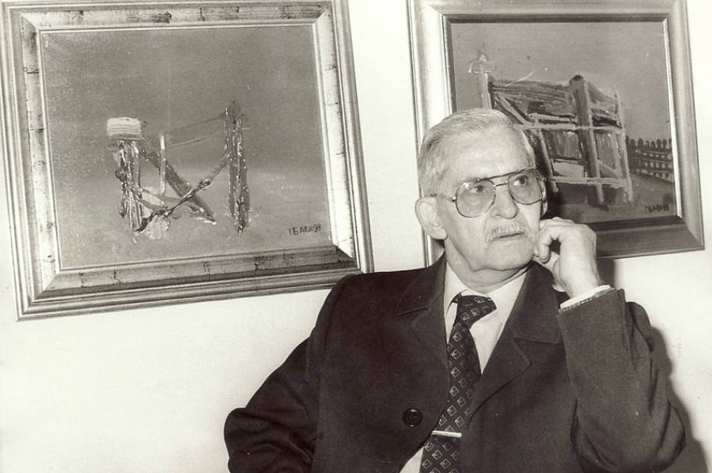

Георги Баев
Роден е в Бургас на 9 ноември 1924 г. Като младеж играе футбол в особено популярния по онова време отбор на „Левски“ (Бургас). През 1949 г. завършва специалност живопис в Художествената академия в София, в класа на акад. Илия Петров и проф. Дечко Узунов. До 1960 г. работи предимно графика и сценография в кукления театър в Бургас. Първото му международно признание е през 1957 г. на 6-ия световен младежки фестивал в Москва. Следват десетки участия в България и в чужбина, много отличия, членство в СБХ, почетен член и член-кореспондент на Австрийското обединение на художниците „Кюнстлер хаус“, на Японската асоциация на художниците „Ника-кай“... Тежък момент в неговия живот е 1983 г., когато запалват ателието му и при пожара изгаря всичко. Това го амбицира и още на следващата година показва композициите „Агресия“, „Апокалипсис сега“, „Обикновен фашизъм“, „На другия ден след атомната бомба“, „Удавник“, „Спомени“, превърнали се в събитие. По-късно платната са изложени във Виена и проф. Петър Вундерли заявява, че това са произведения на един от големите хуманисти на Европа и света. През 1986 г. Баев става носител на Хердеровата награда на Виенската академия за изкуства. Представен е в 34-томния речник на изкуствата на лондонското издателство „Макмилън“, многократно номиниран за „Мъж на годината“, „Личности с влияние“, „Кой-кой е“ на американски и английски биографични институти. Търсен от галеристи в България и в чужбина, определян като чепат човек, но сърцат и с огромна мощ. Негови картини са откупени или дарени на много места в България, художникът е изпратил свои творби дори за гладуващите деца във Виетнам и Кампучия. Георги Баев е депутат в VII Велико Народно събрание (1990 – 1991). Той е сред 39 депутати от СДС, които през 1991 г. напускат VII Велико Народно събрание, несъгласни с приетата на 12 юли 1991 г. конституция и започват безсрочна гладна стачка.